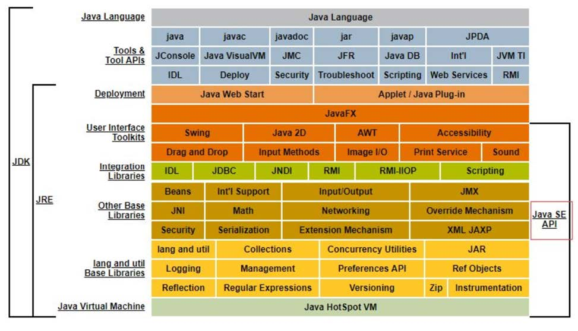
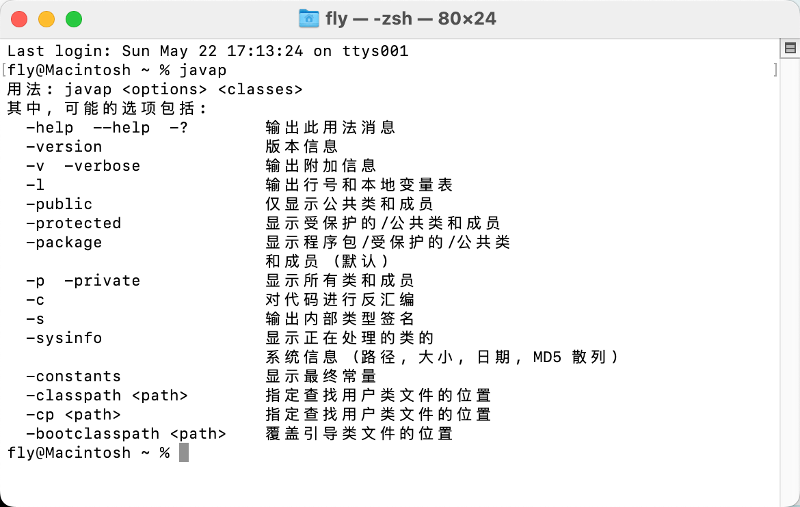
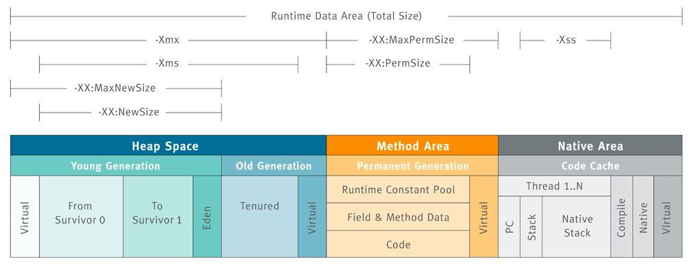
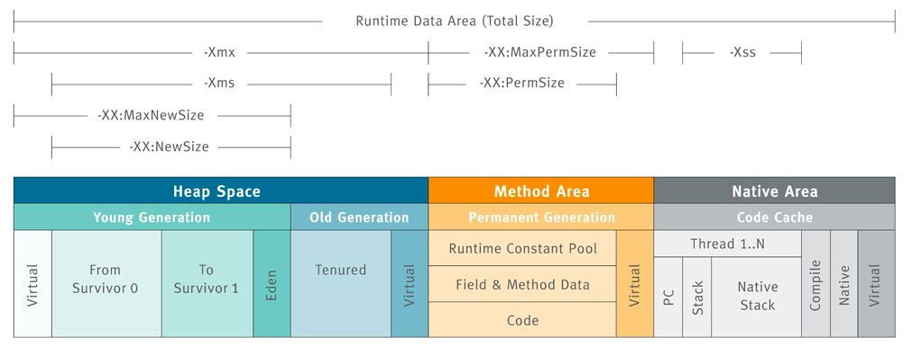
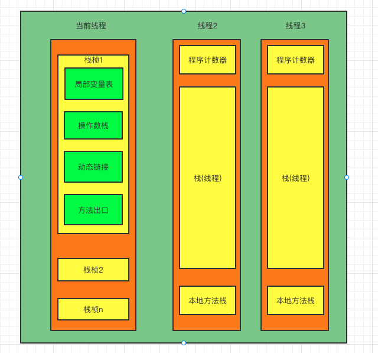

JDK体系结构
javap
通过反编译生成的字节码文件，我们可以深入的了解java代码的工作机制。但是，自己分析类文件结构太麻烦了！除了使用第三方的jclasslib工具之外，oracle官方也提供了工具：javap。
javap是jdk自带的反解析工具。它的作用就是根据class字节码文件，反解析出当前类对应的code区 （字节码指令）、局部变量表、异常表和代码行偏移量映射表、常量池等信息。
- javap -l ：会输出行号和本地变量表信息；
- javap -c ：会对当前class字节码进行反编译生成汇编代码；
- javap -v： class字节码文件中除了包-c参数包含的内容外，还会输出行号、局部变量表信息、常量池等信息；
- 通过javap命令可以查看一个java类反汇编得到的Class文件版本号、常量池、访问标识、变量表、指令代码行号表等信息，但是注意，javap命令并不会显示类索引、父类索引、接口索引集合、
()、 ()等结构；
Java语言的跨平台特性

JVM整体结构及内存模型
 

内存结构
堆(Heap)
线程共享。所有的对象实例以及数组都要在堆上分配。回收器主要管理的对象。
概念
堆的作用是存放对象实例和数组。从结构上来分，可以分为新生代和老年代。而新生代又可以分为Eden 空间、From Survivor 空间（s0）、To Survivor 空间（s1）。 所有新生成的对象首先都是放在新生代的。需要注意，Survivor的两个区是对称的，没先后关系，所以同一个区中可能同时存在从Eden复制过来的对象，和从前一个Survivor复制过来的对象，而复制到老年代的只有从第一个Survivor区过来的对象。而且，Survivor区总有一个是空的。
控制参数
-Xms设置堆的最小空间大小。-Xmx设置堆的最大空间大小。-XX:NewSize设置新生代最小空间大小。-XX:MaxNewSize设置新生代最大空间大小。
垃圾回收
此区域是垃圾回收的主要操作区域。
方法区（Method Area)
概念
方法区（Method Area）与Java 堆一样，是各个线程共享的内存区域，它用于存储已被虚拟机加载的类信息、常量池、静态变量、即时编译器编译后的代码等数据。虽然Java 虚拟机规范把方法区描述为堆的一个逻辑部分，但是它却有一个别名叫做Non-Heap（非堆），目的应该是与Java 堆区分开来。
很多人愿意把方法区称为“永久代”（Permanent Generation），本质上两者并不等价，仅仅是因为HotSpot虚拟机的设计团队选择把GC 分代收集扩展至方法区，或者说使用永久代来实现方法区而已。对于其他虚拟机（如BEA JRockit、IBM J9 等）来说是不存在永久代的概念的。在Java8中永生代彻底消失了。
控制参数
-XX:PermSize 设置最小空间 -XX:MaxPermSize 设置最大空间。
垃圾回收
对此区域会涉及但是很少进行垃圾回收。这个区域的内存回收目标主要是针对常量池的回收和对类型的卸载，一般来说这个区域的回收“成绩”比较难以令人满意。
栈(JVM Stack）
线程私有。存储局部变量表、操作栈、动态链接、方法出口，对象指针。
概念
每一个线程都有自己的java虚拟机栈，这个栈与线程同时创建，一个线程中的每个方法从调用直至执行完成的过程，就对应着一个栈帧在虚拟机栈中入栈到出栈的过程。每个线程有一个私有的栈，随着线程的创建而创建。栈里面存着的是一种叫“栈帧”的东西，每个方法会创建一个栈帧，栈帧中存放了局部变量表（基本数据类型和对象引用）、操作数栈、动态链接和返回地址等信息。
当前运行方法对应的栈帧叫做当前栈帧。局部变量表所需的内存空间在编译期间完成分配，当进入一个方法时，这个方法需要在帧中分配多大的局部变量空间是完全确定的，在方法运行期间不会改变局部变量表的大小。
生命周期
生命周期和线程的生命周期是一致的
栈的特点
栈是一种快速有效的分配储存方式，访问速度仅次于程序计数器。
JVM堆虚拟机栈的操作只有两个:
每个方法执行，伴随着进栈
方法执行结束后，伴随着出栈
对于栈来说并不存在垃圾回收的问题，但是存在溢出的问题。
局部变量表
局部变量表的实际数据结构就是一个数组，solt就是指的数组的下标。主要用来存储方法参数，方法体内的局部变量。包括基本数据类型，对象引用，return Address。局部变量表中的变量也是重要的垃圾回收根节点，只要被局部变量表中直接或间接引用的对象都不会被回收。
局部变量表里存放了编译期间可知的各种基本数据类型（8种）、对象引用、return Address类型（指向一条字节码指令的地址）。他有如下特点：
- 64位长度的long和double类型占用2个局部变量空间（Slot），其余数据类型只占用一个。
- 局部变量表所需的内存空间在编译期间完成分配，当进入一个方法时，这个方法需要在帧中分配多大的局部变量空间是完全确定的.
- 在方法运行期间不会改变局部变量表的大小。
关于Slot的理解
Slot是局部变量表中最基本的存储单位
32位以内的类型占1个slot，64位以内的类型占2个slot。值得注意的是byte、short、char 在存储前被转换为int，boolean也被转换为int，0表示false，非0表示true。
每个Slot都会对应一个索引，通过这个索引访问局部变量表中的局部变量值。
当一个实例方法被调用的时候，它的方法参数和方法体内部定义的局部变量将会按照顺序被复制到局部变量表中的每一个slot上
如果需要访问局部变量表中一个64bit的局部变量值时，只需要使用前一个索引即可。（比如：访问long或double类型变量）
如果当前帧是由构造方法或者实例方法创建的，那么该对象引用this将会存放在index为0的slot处，其余的参数按照参数表顺序继续排列。
静态变量和局部变量的对比
按照数据类型分类：
基本数据类型
引用数据类型
按照类中声明的位置：
成员变量： 在使用前都经历过默认初始化赋值
类变量：连接的准备阶段默认赋值，初始化阶段显示赋值
实例变量：随着对象的创建会在堆空间中分配空间并赋值
局部变量：使用前必须进行显式赋值
类变量：在类加载时有两个机会进行初始化，分别是加载时的准备阶段和初始化阶段。
而局部变量和类变量不同，局部变量表不存在系统初始化的过程，这意味着一旦定义了局部变量则必须人为的初始化，否则无法使用。
操作数栈
其实在栈帧刚刚创建的时候，操作数栈是空的，java虚拟机可以从局部变量表或者对象的实例字段中，复制一些常量或者变量值到操作数栈中。也可以从操作数栈中取走数据。它的深度在编译期就已经确定了。在方法的code属性中max_stack进行查看。
栈顶缓存技术(Tos)
由于操作数是存储在内存中的，因此频繁地执行内存读/写操作必然会影响执行速度。为了解决这个问题，HotSpot JVM的设计者们提出了栈顶缓存（Tos，Top-of-Stack Cashing）技术，将栈顶元素全部缓存在物理CPU的寄存器中，以此降低对内存的读/写次数，提升执行引擎的执行效率。
动态链接
每一个栈帧内部都包含一个指向运行时常量池中该栈帧所属方法的引用。包含这个引用的目的就是为了支持当前方法的代码能够实现动态链接（Dynamic Linking）。
在线程中一个方法去调用另外一个方法，是通过符号引用来实现的，动态链接的作用就是把这个符号引用表示的方法转化为实际方法的直接引用。
在Java源文件被编译到字节码文件中时，所有的变量和方法引用都作为符号引用（Symbolic Reference）保存在class文件的常量池里。比如：描述一个方法调用了另外的其他方法时，就是通过常量池中指向方法的符号引用来表示的，那么动态链接的作用就是为了将这些符号引用转换为调用方法的直接引用。
方法出口
方法的退出存在两种情景：一是正常执行完成后退出，二是出现未处理的非正常退出。无论哪种退出方式，方法退出后都会返回该方法的调用位置。方法正常退出时，调用者的pc计数器的值作为返回地址，即调用该方法的指令的下一条指令的地址。而通过异常退出的，返回地址是要通过异常表来确定，栈帧中一般不会保存这部分信息。
当一个方法开始执行后，只有两种方式可以退出这个方法：
执行引擎遇到任意一个方法返回的字节码指令（return），会有返回值传递给上层的方法调用者，简称正常完成出口；
一个方法在正常调用完成之后，究竟需要使用哪一个返回指令，还需要根据方法返回值的实际数据类型而定。
在字节码指令中，返回指令包含ireturn（当返回值是boolean，byte，char，short和int类型时使用），lreturn（Long类型），freturn（Float类型），dreturn（Double类型），areturn。另外还有一个return指令声明为void的方法，实例初始化方法，类和接口的初始化方法使用。
方法执行过程中，抛出异常时的异常处理，存储在一个异常处理表，方便在发生异常的时候找到处理异常的代码
附带信息
栈帧中还允许携带与Java虚拟机实现相关的一些附加信息。例如：对程序调试提供支持的信息。
控制参数
-Xss控制每个线程栈的大小。
异常情况
在Java 虚拟机规范中，对这个区域规定了两种异常状况：
- StackOverflowError： 异常线程请求的栈深度大于虚拟机所允许的深度时抛出；
- OutOfMemoryError 异常： 虚拟机栈可以动态扩展，当扩展时无法申请到足够的内存或者是创建新线程时没有足够的内存再创建java虚拟机栈时会抛出。
本地方法栈(Native Method Stack)
线程私有。为虚拟机使用到的Native 方法服务。如Java使用c或者c++编写的接口服务时，代码在此区运行。
概念
本地方法栈（Native Method Stacks）与虚拟机栈所发挥的作用是非常相似的，其区别不过是虚拟机栈为虚拟机执行Java 方法（也就是字节码）服务，而本地方法栈则是为虚拟机使用到的Native 方法服务。
控制参数
在Sun JDK中本地方法栈和方法栈是同一个，因此也可以用-Xss控制每个线程的大小。
与虚拟机栈一样，本地方法栈区域也会抛出StackOverflowError 和OutOfMemoryError异常。
程序计数器(Program Counter Register)
概念
计算机组成原理里面提到内存里面有很多寄存器，大概几百个吧，每一种寄存器的用途都不一样，其中有一个寄存器就是程序计数器。这个寄存器的主要作用就是==当前线程所执行的字节码的行号指示器。指向下一条要执行的指令。==线程私有。有些文章也翻译成PC寄存器（PC Register）。
为什么要有这个程序计数器呢？
因为我们的处理器在一个时刻，只能执行一个线程中的指令。但是我们的程序往往都是多线程的，这时候处理器就需要来回切换我们的线程，为了在线程切换之后回到之前正确的位置上，此时就需要一个程序计数器，这也就很容易理解了我们的每个线程都有一个自己的程序计数器来保存自己之前的状态。
程序计数器的功能是什么?
我们的程序代码假如是一行一行执行的，程序计数器永远指向下一行需要执行的字节码指令。在循环结构中，我们就可以改变程序计数器中的值，来指向下一条需要执行的指令。因此，在分支、循环、跳转、异常处理和线程恢复等等一些场景都需要这个程序计数器来完成。
《java虚拟机规范》中说如果当前执行的是 Java 的方法，则该寄存器中保存当前执行指令的地址；倘若执行的是native方法，则PC寄存器中为空（Undefined）。PC寄存区区域就是存放了N多个这样的寄存区。此内存区域是唯一一个在Java虚拟机规范中没有规定任何OutOfMemoryError情况的区域.因此可以把他的几个特点归纳如下。
- 程序计数器指定下一条需要执行的指令
- 每一个线程独有一个程序计数器
- 执行java代码时，寄存器保存当前指令地址
- 执行native方法时候，寄存器为空
- 不会造成OutOfMemoryError情况
总结
| 运行时数据区 | 是否存在Error | 是否存在GC |
|---|---|---|
| 程序计数器 | 否 | 否 |
| 虚拟机栈 | 是 | 否 |
| 本地方法栈 | 是 | 否 |
| 方法区 | 是 | 是 |
| 堆 | 是 | 是 |
在minor gc过程中对象挪动后，引用如何修改
对象在堆内部挪动的过程其实是复制，原有区域对象还在，一般不直接清理，JVM内部清理过程只是将对象分配指针移动到区域的头位置即可，比如扫描s0区域，扫到gcroot引用的非垃圾对象是将这些对象复制到s1或老年代，最后扫描完了将s0区域的对象分配指针移动到区域的起始位置即可，s0区域之前对象并不直接清理，当有新对象分配了，原有区域里的对象也就被清除了。
minor gc在根扫描过程中会记录所有被扫描到的对象引用(在年轻代这些引用很少，因为大部分都是垃圾对象不会扫描到)，如果引用的对象被复制到新地址了，最后会一并更新引用指向新地址。
这里面内部算法比较复杂，感兴趣可以参考R大的这篇文章：
https://hllvm-group.iteye.com/group/topic/39376#post-257329
JVM内存参数设置
jvm参数分类
根据jvm参数开头可以区分参数类型，共三类：“-”、“-X”、“-XX”，
标准参数(-)
所有的JVM实现都必须实现这些参数的功能,而且向后兼容;
例子：-verbose:class，-verbose:gc，-verbose:jni……
非标准参数(-X)
默认JVM实现这些参数的功能,但是并不保证所有JVM实现都满足,且不保证向后兼容;
例子：Xms20m，-Xmx20m，-Xmn20m，-Xss128k……
非Stable参数(-XX)
此类参数各个JVM实现会有所不同,将来可能会随时取消,需要慎重使用;
例子：-XX:+PrintGCDetails，-XX:-UseParallelGC，-XX:+PrintGCTimeStamps……
关键参数详解
最重要和常见的几个参数如下：
■ -Xms20m ：设置jvm初始化堆大小为20m，一般与-Xmx相同避免垃圾回收完成后jvm重新分。
■ -Xmx20m：设置jvm最大可用内存大小为20m。
■ -Xmn10m：设置新生代大小为20m。
■ -Xss128k：设置每个线程的栈大小为128k。
上面这几个参数我以前经常容易被混淆，不过后来根据字母拆分就简单了很多。
| 参数 | 拆分 | 含义 |
|---|---|---|
| -Xms | -X ,memory,size | 内存大小 |
| -Xmx | -X,memory,max | 内存最大 |
| -Xmn | -X,memory,new | 新生代内存 |
| -Xss | -X,stack,size | 栈大小 |
还有几个GC的参数见名知意就不详解了，后面测试会一一说明，主要的如下：
■ -verbose:gc：可以输出每次GC的一些信息；
■ -XX:-UseConcMarkSweepGC：使用CMS收集器；
■ -XX:-UseParallelGC ；
■ -XX:-UseSerialGC；
■ -XX:CMSInitiatingOccupancyFraction=80 CMS gc，表示在老年代达到80%使用率时马上进行回收；
■ -XX:+printGC；
■ -XX:+PrintGCDetails：打印GC详情；
■ -XX:+PrintGCTimeStamps：打印时间戳；